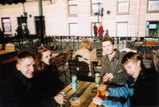
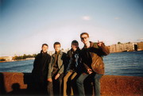
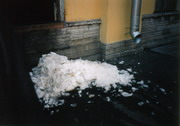
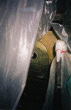
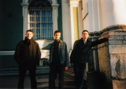
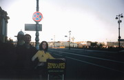
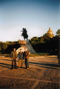
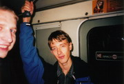

|
Так уж сложилось, что
большая часть собраний «Исходников» проходит в столице.
Но Питер в меру сил тоже старается не отставать.
И 13 сентября те петербуржцы форума, которые были в городе,
договорились собраться, поболтать и попить пивка.
В итоге
получилась, как выразился _IX0DeS, «я-ля деловя встеча по
Питерски» :). Всё прошло весело, спокойно и дружелюбно.
Присутствовали
_IX0DeS, DEiL, Muran, SLiP и kenai.
А если интересно, то можете
посмотреть фотографии с нашей встречи. У этих фотографий тяжелая
судьба, но, несмотря на множество преград и раздолбайство одного
человека (не будем говорить, кто, хотя это был kenai ;)),
они предстали перед вами.
 Пиво любят все :)
В их числе (слева направо): Muran, _IX0DeS, DEiL, SLiP.
 Набережная Невы.
Красивые места есть в Питере, так что если еще не видели их вживую, то милости просим.
Слева направо: Muran, kenai, SLiP и DEiL.
 Ничего удивительного - так, обычный сентябрьский сугроб :)
 После долгих раздумий мы пришли к выводу, что именно в этом бункере живет всеми горячо любимый Supreme :)
 Слева направо: Muran, kenai, DEiL.
 DEiL – известный ловелас.
Женщины, а в особенности картонные, от него просто без ума :)
 Классика: фото на фоне Медного Всадника.
Слева направо: kenai, SLiP и DEiL.
 Пиво кончилось, времени особо и не было, а вот настроение приподнятое до следующей (надеемся, более масштабной) встречи.
Слева направо: немного Muran’а и целый SLiP.
Репортаж подготовил kenai
|
{kind=link}
{kind=link}
{kind=link}
{kind=link}
{kind=link}
{kind=link}
{kind=link}
{kind=link}